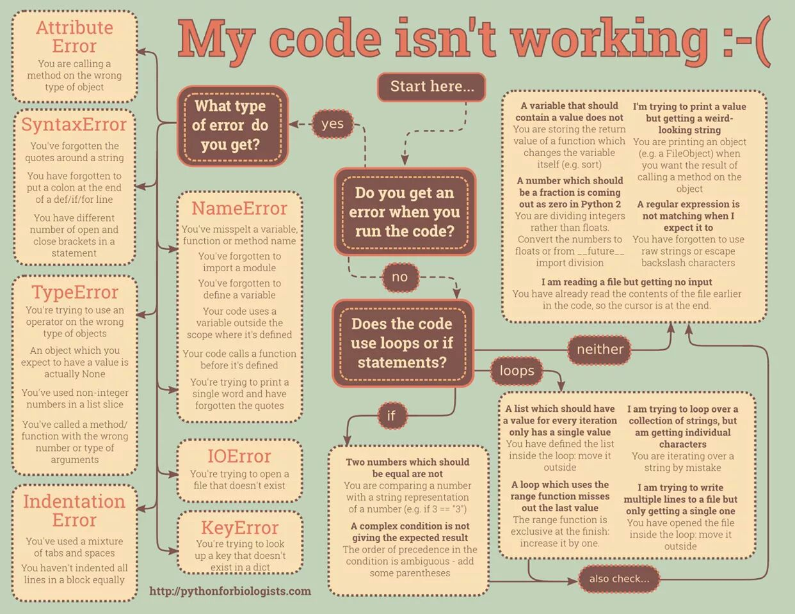
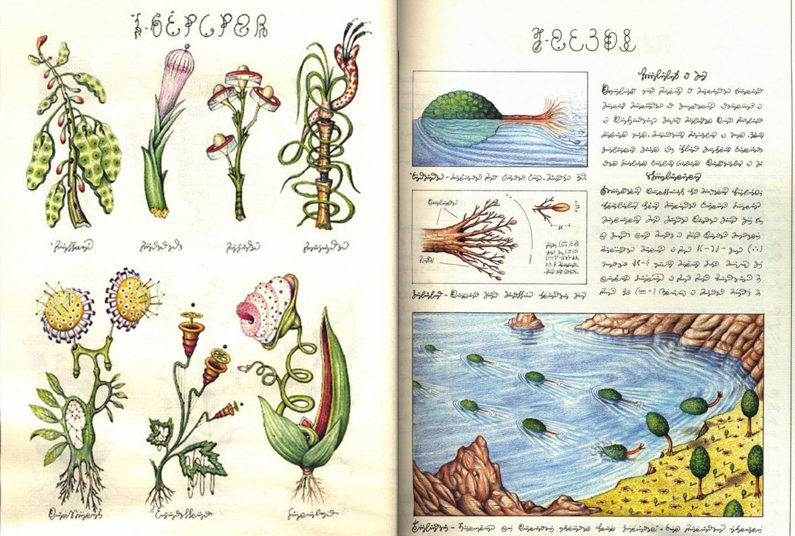

Curriculum
If nothing else, today I am going to send followup emails. I am going to do this by update and condense literature description then describe binary-cutoff procedure and finding then rate 200 items. If I do this and only this, 15.12.2016 will be a good day.
Ancient Philosophy: Plato & His Predecessors
- Quiz

Art of Programming
Learning Goal: Understand basis for the "property that cannot be named," become familiar with Christopher Alexander ideas
- Reading: Christopher Alexander, Notes on the Synthesis of Form
- Reading: Christopher Alexander, Timeless way of Building
- Reading: Christopher Alexander, A Pattern Language
Big History: Connecting Knowledge
- Quiz
Video Game Character Design
- Opposites Attract "In this assignment I'd like you to expand on the previous assignment and try drawing two characters for a possible game. Maybe one is a hero and another is a villain. One could be a boss and another could be an underling. The challenge will be to give each character a clearly different design. As an example, think of Andy's approach with his softer, rounder explorer and his harsher, sharper aliens. Or pair a mechanical style on one character with a more organic look for another character. Or a rustic approach on one character could contrast with a more modern approach on another character. ... Does each character have a different approach to their design? For example, do the characters vary in shape, pose, expression, proportion, mood, etc.?"
- Review peer submissions
Classical Sociology Theory
- Quiz
How to Make a Comic Book (Project-Centered Course)
- Comic idea graded assignment
- Review peers work
- Paste in rest of curriculum

Language Invention
Learning Goal: get practice with different writing systems.
Current Topics in Big-Picture Science
Digital Painting and Drawing Methods
Learning Goal: Get back into using CLIP studio
- MAke some digital things for the Imagemaking homework
- Finish Serendipity Camp Painting
German
- Do more on Duolingo
- Write something in German in the notebook!

Fundamentals of Graphic Design
- Review 2 others' assignments (by 21st)
Plagues, Witches, and War: The Worlds of Historical Fiction
Learning Goal: Address the broader topic of combining audit-only online courses with self-curated (or self-developed) activities
- Watch video forthe first week
- Given that this is not a graded course, develop some auxilary assignments or activities, e.g., grawing on the books I already have (Celine, Girl with a Pearl Earring)
Jazz Improvisation
- Improvise over a track, record it
Miracles of Human Language: An Introduction to Linguistics
- Quiz
Fundamentals of Music Theory
- Make a circle of fifth card, and some other cards - use Marcel's little book, too!
- Quiz
ART of the MOOC: Public Art and Pedagogy
- Quiz
Script Writing
- Episode pitch
- Act 1 outline
- Act 1 draft
- Episode pitch - peer review
- Act 1 outline - peer review
- Act 1 draft - peer review
Improving your statistical inferences
- Either set up R studio or - better! - check out this iPy tutorial using scipy
- Quiz
The Blues
- Write down the scales from some of the lessons in songbook
- ... and practice them!
- Quiz
Learning Goal: continue to cultivate a pattern of short regular sessionsEstablishing a Sustainable Health Pattern
Shown: 20/38